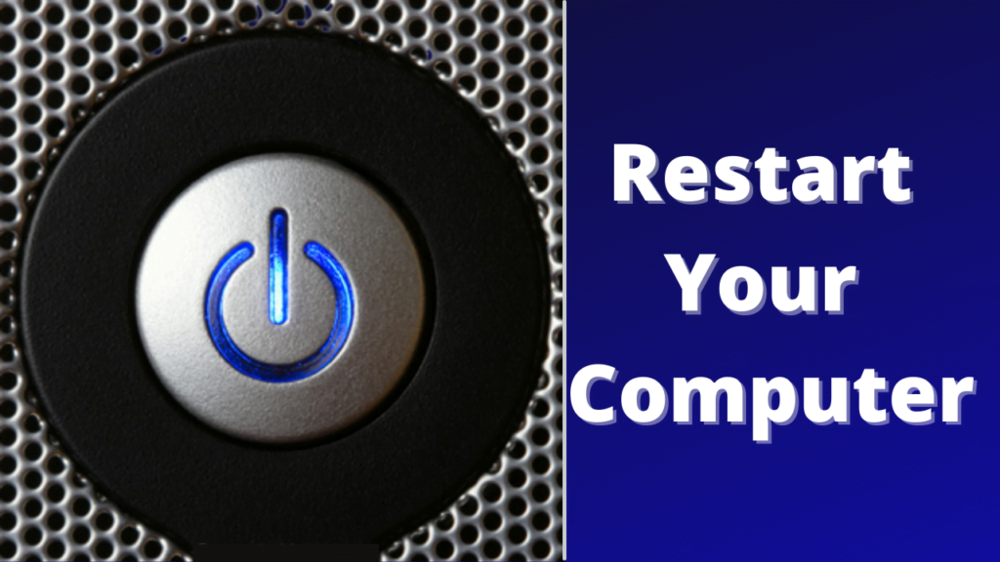
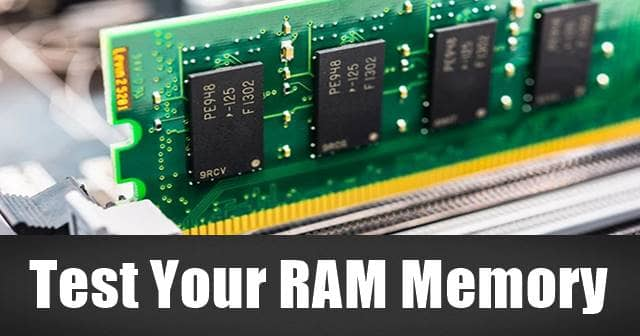
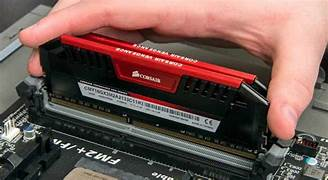
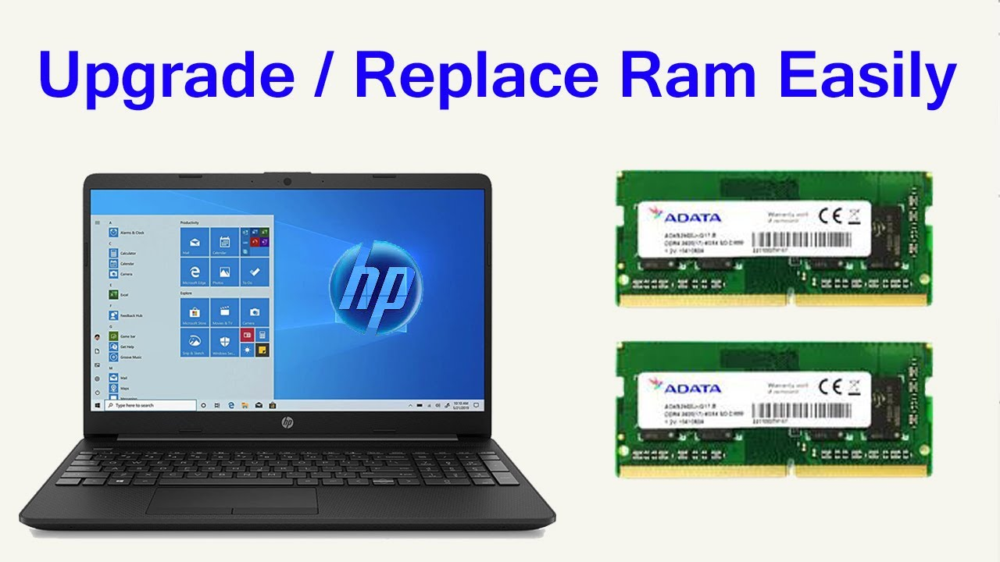
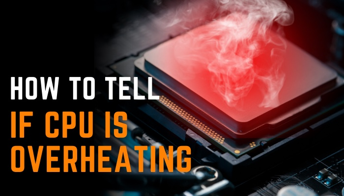
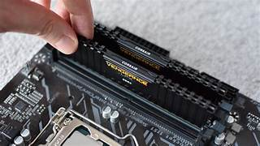

RAM TROUBLESHOOT
Experiencing issues with your RAM can cause significant performance problems. Follow these steps to troubleshoot and resolve RAM-related issues:
-
1. Restart Your Laptop
Simple reboot: Sometimes, temporary memory issues can be resolved by a simple restart. This clears the RAM and can help restore performance.  -
2. Check for Software Issues
Close unnecessary programs: Running too many applications can overload your RAM. Close any unnecessary programs, especially resource-heavy ones like video editors or large spreadsheets.
Update drivers and OS: Outdated drivers or an old operating system can cause memory management issues. Ensure your OS and drivers are up to date.
-
3. Test RAM with Diagnostic Tools
Use Windows Memory Diagnostic Tool:
Press Windows + R, type mdsched.exe, and press Enter.
Choose "Restart now and check for problems" to let the tool run. It will restart the system and check for RAM issues.
If any problems are found, the tool will notify you.
Use third-party tools: You can also use tools like MemTest86 to run a thorough RAM diagnostic.  -
4. Check for RAM Compatibility Issues
Check system specifications: If you’ve recently upgraded the RAM, ensure that the new RAM is compatible with your laptop (correct type, speed, and capacity). Laptops have limits on the amount of RAM they can support.
Use matching RAM sticks: Mixing different RAM brands or speeds can sometimes cause issues. If possible, use identical RAM sticks (same manufacturer, size, and speed).  -
5. Upgrade or Replace RAM
Upgrade the RAM: If your laptop is slow due to limited RAM (e.g., 4GB or less), upgrading to more RAM can significantly improve performance. Ensure your laptop supports the upgrade and purchase compatible RAM.
Replace faulty RAM: If you’ve run diagnostics and one of the RAM sticks is faulty, replace it with a new, compatible module.  -
6. Check for Overheating
Ensure proper ventilation: Overheating can cause RAM errors. Ensure your laptop’s vents are not blocked and use a cooling pad if necessary.
Clean the laptop: Dust buildup can cause heat, so use compressed air to clean the vents and fans.  -
7. Update the BIOS
Check for BIOS updates: Sometimes, a BIOS update can improve RAM compatibility and system stability. Check your laptop manufacturer's website for BIOS updates and follow their instructions carefully. -
8. Test with One Stick at a Time (If You Have Multiple RAM Sticks)
Isolate faulty RAM: If you have multiple RAM sticks, remove one stick and try booting the laptop. Alternate between the sticks to see if one of them is causing the issue. If one stick works but the other doesn't, the faulty stick should be replaced.  -
9. Professional Assistance
If none of the above solutions work, the problem could be with the motherboard or memory controller. In this case, it’s best to consult a professional technician for further diagnosis.
Following these steps should help in diagnosing and resolving RAM issues. For more detailed instructions, refer to the troubleshooting guide provided.